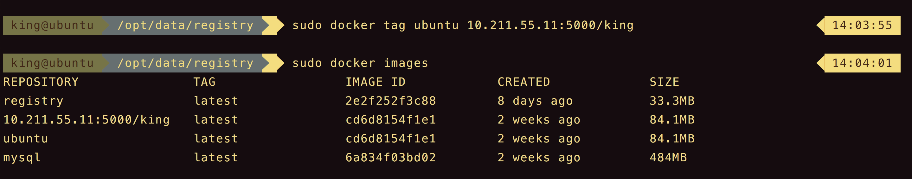
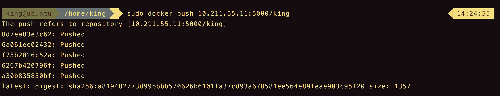

仓库（Repository）是集中存放镜像的地方。
目录
注册服务器是存放仓库的具体服务器，每个服务器上可以有多个仓库，而每个仓库下有多个镜像。对于仓库地址dl.dockerpool.com/ubuntu来说，dl.dockerpool.com是注册服务器地址，ubuntu是仓库名。
Docker Hub
创建和使用私有仓库
使用registry镜像创建私有仓库
可以使用官方提供的registry镜像来搭建本地私有仓库环境。
1 | sudo docker run -d -p 5000:5000 -v /opt/data/registry:/tmp/registry registry |
此时本地将启动一个私有仓库服务，监听端口为5000。
管理私有仓库镜像
使用docker tag将ubuntu镜像标记为10.211.55.11:5000/test（格式为docker tag SOURCE_IMAGE[:TAG] TARGET_IMAGE[:TAG]）
1 | sudo docker tag ubuntu 10.211.55.11:5000/king |

使用docker push上传标记的镜像。
1 | sudo docker push 10.211.55.11:5000/king |

现在可以在任意连接到10.211.55.11的机器下载这个镜像。
1 | sudo docker pull 10.211.55.11:5000/king |
出现错误
1 | king@ubuntu: sudo docker push 10.211.55.11:5000/king |
在/etc/docker下，创建daemon.json文件。
1 | { "insecure-registries":["10.211.55.11:5000"]} |
重启docker
1 | systemctl restart docker.service |
重新启动registry
1 | sudo docker ps -a # 找到registry的CONTAINER ID |